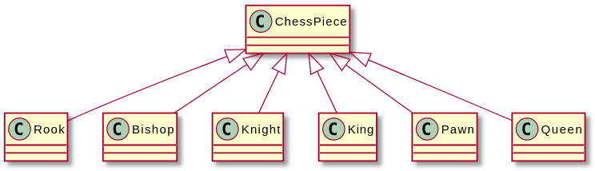
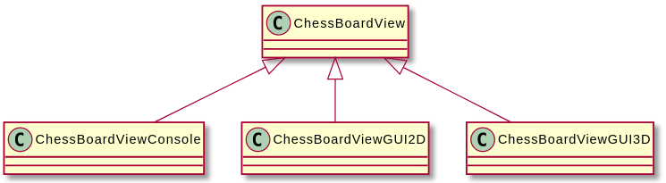

Chess Program Design Example
- 참고문헌 : 전문가를 위한 C++(마크 그레고리 / 한빛미디어)
1. 요구사항
프로그램의 기능과 성능에 대한 요구사항을 명확하게 정리하는 단계이다. 이러한 요구사항은 요구사항 명세서라는 문서 형태로 정리하는 것이 바람직하다.
체스 프로그램의 요구사항은 대략 다음과 같다.
- 표준 체스 규칙을 준수한다.
- 두 명의 플레이어를 지원해야 한다. 컴퓨터가 조작하는 플레이어는 제공하지 않는다.
- 인터페이스는 텍스트 기반으로 표현한다.
- 체스보드와 말은 일반 텍스트로 표현한다.
- 플레이어는 체스보드의 위치를 숫자로 입력하는 방식으로 말을 움직인다.
2. 디자인 단계
디자인 단계는 일반적인 부분에서 시작해서 점차 구체적인 부분으로 진행한다. 필요하다면 다이어그램과 표도 작성한다.
2.1 프로그램을 서브시스템으로 분할하기
먼저 프로그램의 기능에 따라 서브시스템 단위로 분할하고 각각에 대한 인터페이스와 연동 방식을 정의한다. 이때 데이터 구조나 알고리즘, 심지에 클래스에 대해서는 신경 쓰지 않는다.
분할한 서브시스템을 표로 만들어 각각 하이레벨 관점의 동작과 기능 그리고 다른 서브시스템에 제공할 인터페이스와 다른 시스템을 사용하는 데 필요한 인터페이스 등을 정리한다.
체스 프로그램을 디자인할 때 모델-뷰-컨트롤러(model-view-controller, MVC) 패러다임을 적용해서 데이터를 저장하는 부분과 데이터를 화면에 표시하는 부분을 구분하였다.
체스 프로그램을 구성하는 서브시스템을 표로 정리하면 다음과 같다.
| 서브시스템 이름 | 인스턴스 수 | 기능 | 제공하는 인터페이스 | 사용하는 인터페이스 |
|---|---|---|---|---|
| GamePlay | 1 | 게임을 시작한다. 게임 흐름을 제어한다. 화면을 제어한다. 승자를 결정한다. 게임을 종료한다. | 게임 종료 | 차례 바꾸기(Player), 그리기(ChessBoardView) |
| ChessBoard | 1 | 체스 말을 저장한다. 무승부나 체크메이트를 검사한다. | 말 위치 확인하기, 말 위치 지정하기 | 게임 종료(GamePlay) |
| ChessBoardView | 1 | 현재 상태에 맞게 체스보드를 그린다. | 그리기 | 그리기(ChessPieceView) |
| ChessPiece | 32 | 말을 움직인다. 규칙에 맞게 움직였는지 확인한다. | 이동, 이동 확인 | 말 위치 확인하기(ChessBoard), 말 위치 설정하기(ChessBoard) |
| ChessPieceView | 32 | 현재 상태에 맞게 체스 말을 그린다. | 그리기 | 없음 |
| Player | 2 | 사용자에게 이동할 위치를 물어보고, 이에 대한 입력을 받는다. 말을 움직인다. | 차례 바꾸기 | 말 위치 확인하기(ChessBoard), 이동(ChessPiece), 이동 확인(ChessPiece) |
| ErrorLogger | 1 | 에러 메시지를 로그 파일에 기록한다. | 에러 기록 | 없음 |
이 표를 보면 체스 프로그램은 기능에 따라 GamePlay, ChessBoard, ChessBoardView, ChessPiece, ChessPieceView, Player, ErrorLogger 등으로 구성된다.
서브시스템을 잘 구성하면 프로그램을 기본 기능에 따라 분리할 수 있다. 예를 들어 Player는 ChessBoard나 ChessPiece, GamePlay와는 구분되는 하나의 서브시스템이다. Player를 GamePlay 서브시스템과 합치면 서로 논리적으로 구분되지 않아서 바람직하지 않으며, 다른 것과 합쳐도 마찬가지다.
MVC 패턴을 적용하면 ChessBoard와 ChessPiece 서브시스템은 모델에 속한다. ChessBoardView와 ChessPieceView는 뷰에 속하고, Player는 컨트롤러에 해당한다.
이러한 서브시스템의 관계를 표로 표현하기 힘들다면 다이어그램을 표현해서 각각의 호출 관계를 선으로 표현하는 것도 좋은 방법이다.
2.2 스레드 모델 선택하기
프로그램에서 사용할 최상위 스레드 수와 각각의 상호작용 방식을 정해두는 것이 좋다. 최상위 스레드에 대한 예로 UI 스레드, 오디오 재생 스레드, 네트워크 통신 스레드 등이 있다.
멀티스레드 기반으로 디자인할 때 데이터를 공유하는 부분을 최대한 피하는 것이 간결성과 안전성 측면에 좋다. 굳이 공유해야 한다면 잠금 방식을 정한다.
따라서 프로그램에서 서로 뚜렷이 구분되는 작업이 여러 개고, 각각 동시에 실행할 수도 있다면 멀티스레드로 구성한다.
해당 체스 프로그램은 게임 흐름을 제어하는 데 스레드 하나면 충분하다고 판단하였다.
2.3 서브시스템의 클래스 계층 구성하기
프로그램에 구현할 클래스 계층을 결정한다. 체스 말을 표현하려면 클래스 계층을 정해야 한다. 여기서 제네릭 ChessPiece 클래스는 추상 베이스 클래스 역할을 하며,ChessPieceView 클래스도 이와 비슷한 방식으로 계층도를 구성한다.

게임 프로그램에서 텍스트 기반 인터페이스와 그래픽 기반 인터페이스를 구현하려면 ChessBoardView 클래스에 대한 계층도 다음과 같의 정의하였다.

2.4 서브시스템의 클래스, 데이터 구조, 알고리즘, 패턴 지정하기
각 서브시스템에 구현할 구체적인 클래스와 같이 서브시스템에 대한 세부사항을 지정한다. 서브시스템을 곧바로 클래스로 표현할 가능성도 있다.
| 서브시스템 | 클래스 | 데이터 구조 | 알고리즘 | 패턴 |
|---|---|---|---|---|
| GamePlay | GamePlay 클래스 | GamePlay 객체는 ChessBoard 객체 한 개와 Player 객체 두 개를 가진다. | 플레이어는 말을 번갈아 움직인다. | 없음 |
| ChessBoard | ChessBoard 클래스 | ChessBoard 객체는 32개의 ChessPiece를 2차원 구조로 저장한다. | 매번 말을 움직일 때마다 우승 또는 무승부 여부를 검사한다. | 없음 |
| ChessBoardView | ChessBoardView 추상 베이스 클래스, ChessBoardViewConsole / ChessBoardViewGUI2D 등의 파생 구현 클래스 | 체스보드를 그릴 방법에 대한 정보를 저장한다. | 체스보드를 그린다. | 관찰자 패턴 |
| ChessPiece | ChessPiece 추상 베이스 클래스, Rook / Bishop / Knight / King / Pawn / Queen 파생 구현 클래스 | 각 말마다 체스모드 위의 위치를 저장한다. | 체스보드 위에 놓인 말의 위치가 규칙에 맞게 이동했는지 검사한다. | 없음 |
| ChessPieceView | ChessPieceView 추상 베이스 클래스, RookView / BishopView 등의 파생 클래스, RookViewConsole / RookViewGUI2D 등의 파생 구현 클래스 | 체스 말을 그리는 방법에 대한 정보를 저장한다. | 체스 말을 그린다. | 관찰자 패턴 |
| Player | Player 추상 베이스 클래스, PlayerConsole / PlayerGUI2D 등의 파생 구현 클래스 | 없음 | 사용자에게 이동할 위치를 물어보고, 그 움직임이 규칙에 맞는지 확인한 뒤 말을 이동시킨다. | 중재자 패턴 |
| ErrorLogger | ErrorLogger 클래스 | 로그에 기록할 메시지에 대한 큐 | 메시지를 버퍼에 담았다가 로그 파일에 쓴다. | 의존성 주입 패턴 |
예제에서는 간단히 정의했지만, 일반적으로 이 단계에서 디자인 문서를 작성할 때 각 클래스에 대한 실제 인터페이스까지 표현한다.
클래스를 정의하고 데이터 구조, 알고리즘, 패턴을 적용하는 과정은 간단하지 않다. 이때 앞에서 설명한 추상화와 재사용성의 원칙을 최대한 적용한다.
2.5 서브시스템의 에러 처리 방법 정하기
이 단계에서는 각 서브시스템에 적용할 에러 처리 방법을 나열한다. 에러 처리 방식을 정할 때는 반드시 메모리 할당 오류와 같은 시스템 에러뿐만 아니라 잘못된 입력 같은 사용자 에러도 고려한다. 서브시스템에서 익셉션을 사용하는지도 지정한다.
| 서브시스템 | 시스템 에러 처리 | 사용자 에러 처리 |
|---|---|---|
| GamePlay | ChessBoard나 Player에 대한 메모리 할당에 실패하면 ErrorLogger로 에러를 로그에 기록하고, 사용자에게 메시지를 출력하고, 프로그램을 안전하게 종료시킨다. | 해당 사항 없음(사용자가 직접 다루는 인터페이스 없음) |
| ChessBoard, ChessPiece | 메모리 할당에 실패하면 ErrorLogger로 에러를 로그에 기록한 뒤 익셉션을 발생시킨다. | 해당 사항 없음(사용자가 직접 다루는 인터페이스 없음) |
| ChessBoardView, ChessPieceView | 렌더링 과정에서 문제가 발생하면 ErrorLogger로 에러를 로그에 기록한 뒤 익셉션을 발생시킨다. | 해당 사항 없음(사용자가 직접 다루는 인터페이스 없음) |
| Player | 메모리 할당에 실패하면 ErrorLogger로 에러를 로그에 기록한 뒤 익셉션을 발생시킨다. | 사용자가 이동한 말이 체스보드를 벗어나지 않았는지 검사하고, 벗어나면 다시 입력하도록 요청한다. |
| ErrorLogger | 메모리 할당에 실패하면 로그에 에러를 기록하고, 사용자에게 이 사실을 알려주고, 프로그램을 안전하게 종료시킨다. | 해당 사항 없음(사용자가 직접 다루는 인터페이스 없음) |
에러 처리의 기본 원칙은 모든 에러를 처리하는 것이다. 따라서 발생 가능한 경우의 수를 면밀히 검토한다. 어느 하나라도 빠뜨리면 언젠가 버그가 발생한다.